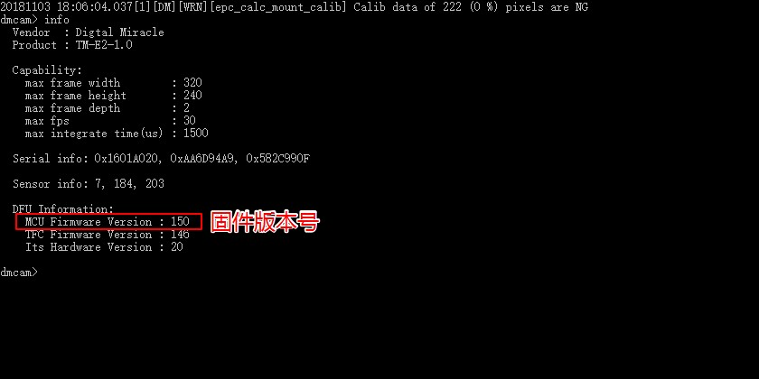

固件升级概述¶
模组固件是指运行在模组内的主控mcu上，主要控制TOF芯片的采集方式和获取TOF芯片的原始数据。为了配合新版SDK的新功能和修改原有版本的bug，需要对模组固件也进行升级。
固件升级说明¶

升级方法¶
进入对应的系统升级包，如windows下运行fw_upgrade_win.bat脚本，在linux下 则运行fw_upgrade_linux.sh脚本，如windows下的升级截图如下图：

注意： 升级前的固件版本如果小于143（包括143），固件升级时需要将原来的校准数据进行处理，所以需要比较长的时间，升级时需耐心等待，确保升级成功前禁止关闭升级窗口。
升级验证¶
升级后需要确认是否升级成功，通过打开SDK中SmartToF Viewer,查看像素校准是 否可以正常勾选，如果不能正常勾选，则有可能是原来的固件版本低于143，升级时校准数据升级出错。正常如下图，像素校准可以正常打勾，并且右边的SW:150代表升级后的固件版本。

除了SmartToF Viewer,也可运行开tool中的dmcam-cli工具，默认进入CLI的交互模式，输入info命令后回车会显示模组的信息，查看MCU Firmware Version后的版本号是不是需要升级的固件版本号，如下图所示：
